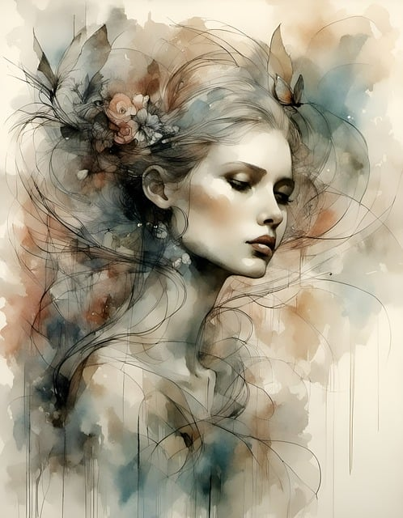

Eu, de Corpo e Alma!
"Este blog é um pedaço de mim. Um espaço onde compartilho minhas fases, histórias, momentos, pensamentos e
sentimentos. Aqui, cada palavra reflete um pouco da minha jornada, com altos e baixos, descobertas e recomeços.
Escrevo para me conectar comigo mesma, mas também para quem se identificar pelo caminho. Porque somos feitos de
experiências, e cada uma delas nos transforma, nos ensina e nos torna quem somos. Seja bem-vindo ao meu
universo, de corpo e alma."

7 Coisas Que Você Vai Encontrar Por Aqui:
- Minhas fases: Cada ciclo da vida traz aprendizados, desafios e transformações, e eu compartilho tudo por
aqui.
- Histórias que moldam quem sou: Momentos que marcaram minha trajetória e ajudaram a construir minha
essência.
- Reflexões sobre a vida: Pensamentos que surgem no meio do caos ou na calmaria, sempre com um olhar sincero.
- Sentimentos à flor da pele: Textos escritos com o coração, sem filtros, porque sentir é parte de existir.
- Pequenos momentos que importam: Aqueles instantes que parecem simples, mas fazem toda a diferença.
- Recomeços e despedidas: A vida é feita de ciclos, e cada fim carrega a semente de um novo começo.
- Eu, de corpo e alma – Minha essência, minhas verdades e tudo o que sou, sem máscaras.